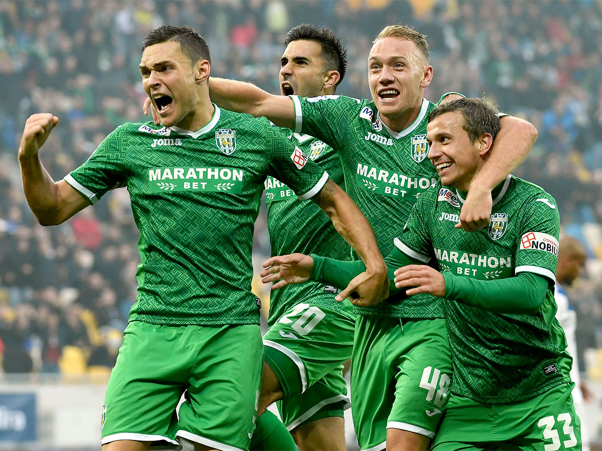

News
 Перший виїзний поєдинок для «зелено-білих» у новому сезоні неабияк запам’ятався як для команди, так і для вболівальників. Поступаючись по ходу зустрічі 0:2, карпатівці зуміли відігратись та здобути на виїзді важливе очко. Схожий сценарій за тиждень розгортався вже у Львові, у грі «Карпат» з київським «Арсеналом». Однак, цього разу «зелено-білим» не вистачило одного м’яча...
Перший виїзний поєдинок для «зелено-білих» у новому сезоні неабияк запам’ятався як для команди, так і для вболівальників. Поступаючись по ходу зустрічі 0:2, карпатівці зуміли відігратись та здобути на виїзді важливе очко. Схожий сценарій за тиждень розгортався вже у Львові, у грі «Карпат» з київським «Арсеналом». Однак, цього разу «зелено-білим» не вистачило одного м’яча... Гра в Одесі почалася для «Карпат» ідеально. Уже на першій хвилині Карраскаль скористався помилкою оборони «Чорноморця» і пробивав по воротах, але на шляху до цілі м'яч влучив у руку Грачову – пенальті. Вирок судді точно виконав Мар'ян Швед і це 0:1.
Гра в Одесі почалася для «Карпат» ідеально. Уже на першій хвилині Карраскаль скористався помилкою оборони «Чорноморця» і пробивав по воротах, але на шляху до цілі м'яч влучив у руку Грачову – пенальті. Вирок судді точно виконав Мар'ян Швед і це 0:1.«Карпати» приїхали до Києва після прикрої поразки від «Арсенала». Зрештою, динамівці також мали клопоти в останніх поєдинках – «Аякс» вибив їх із Ліги чемпіонів, а «Чорноморець» здобув очко наприкінці гри. Жозе Мораіш вніс певні корективи у стартовий склад – Олексій Гуцуляк вийшов на позиції чистого форварда, Карраскаль змістився глибше, а Швед з Мякушком опинилися на фланзі атаки.
 Напружене львівське дербі завершилося внічию 1:1. Забиті голи команди відклали на другий тайм. Сергій Мякушко у своєму стилі чудово виконав штрафний, а нічию номінальним господарям приніс дует Западня-Бруно
Напружене львівське дербі завершилося внічию 1:1. Забиті голи команди відклали на другий тайм. Сергій Мякушко у своєму стилі чудово виконав штрафний, а нічию номінальним господарям приніс дует Западня-Бруно